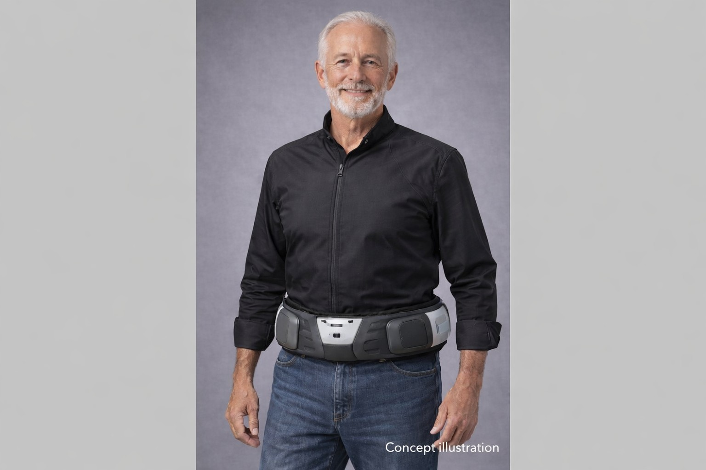
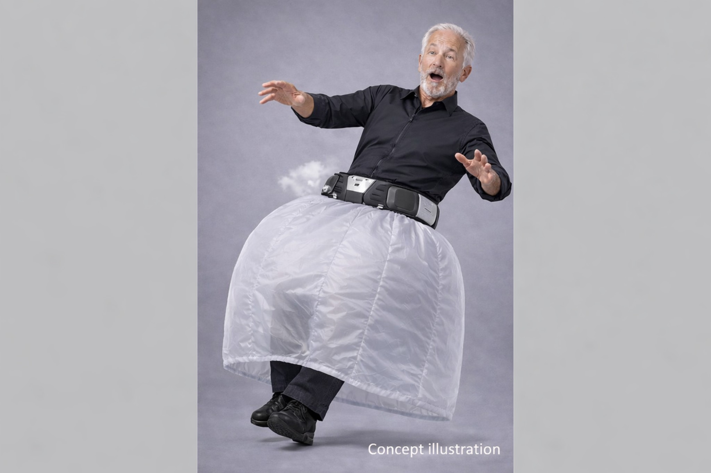

The BOUNCE™ Story: How We Got Here
Early in 2025, my father, Rick Lawrence—a technical Navy veteran—suffered a severe fall and broke his arm. During his follow-up care, he met with his VA vascular surgeon, Dr. Halpren, Chief of Vascular Surgery at the Phoenix VA Hospital. Highly concerned by his elevated fall risk, she remarked half-jokingly that she wished she could just wrap him in bubble wrap.
On Christmas Eve 2025, that joke became a painful reality.
My dad slipped on a dog toy, broke his foot, severely injured his knee, and spent two weeks confined to a hospital bed. During his grueling recovery, Dr. Halpren would visit during her daily rounds and discuss current "Personal Bubble Wrap" options and found that none existed like they were looking for.
As an engineer, he stopped wishing and started designing during his lengthy recovery; BOUNCE™ was born.
The Invisible Crisis Facing Our Seniors & Veterans
We didn’t just set out to build a piece of assistive technology; we engineered a definitive response to a catastrophic public health epidemic. Falls are not random, isolated incidents; they are ordinary moments that turn fatal in milliseconds.
-
The Leading Killer: For Americans aged 65 and older, falls are the number one cause of injury-related death—outranking motor vehicle accidents and firearms combined. Every year, over 43,000 older Americans lose their lives to a fall.
Verify CDC Mortality Statistics → -
The Financial Bleed: Non-fatal falls, hospital admissions, over 3 million annually, inflict an astronomical $80 billion annual drain on the U.S. healthcare system. Much of this burden ($53.3 billion) is borne directly by taxpayers through Medicare and the VA.
Examine NCOA Public Health Cost Data → -
The Post-Admission Clock: A single serious fall triggers an acute hospital stay averaging 5.5 to 7.3 days, ballooning to nearly 10 days for hip fractures. If a veteran experiences institutional delays waiting for an open bed at a skilled nursing facility, that stay skyrockets to an average of 26.3 days, costing upwards of $70,000 per event.
Search Clinical Admission Tracking via PubMed → or Review VA Patient Safety Records →
The Post-Fall Trap
Existing market solutions are entirely reactive. Post-fall pendants and wall-mounted buttons do absolutely nothing to prevent the initial physical trauma—they simply alert emergency services after the damage is done.
When a hip fracture occurs, a person’s life trajectory changes permanently:
- The 1-Year Mortality Window: A hip fracture is a massive, systemic trauma. The one-year mortality rate sits between 15% and 30%.
- Loss of Autonomy: Fewer than half of all hip fracture survivors ever regain their pre-fall functional independence. Over 50% plunge into permanent dependence on caregivers, and the odds of requiring long-term nursing home placement surge 3.8 to 4.5-fold.
- The Fear-of-Falling Cycle: Even a non-injurious fall triggers a psychological trauma loop. The resulting fear causes elders to naturally restrict their mobility, accelerating muscle wasting (sarcopenia), worsening their balance, and ironically doubling the probability of a subsequent fall.
Our Approach: Pre-Impact Defiance
BOUNCE™ is built around a disruptive paradigm: Protection must adapt to people—not the other way around. In a real-world fall, ground impact occurs in a brutal 1/3 to 1/2 of a second (300 to 500 milliseconds). To potentially save a life, protection must fully deploy in under 1/3 of a second. BOUNCE™ shatters this limitation.
Operating at an ultra-high-speed telemetry rate of 1,600 Hz, our advanced hardware utilizes a Triple Modular Redundancy (TMR) sensor architecture. Three independent IMUs continuously stream 6-axis kinematic data to a high-performance STM32 microcontroller via high-speed SPI lines. It’s designed and in prototyping now. The firmware implements a strict 2-of-3 voting system:
[System Architecture Note]: By processing data 1,600 times per second across three redundant sensor paths, the system filters out structural noise and normal daily activities (like sitting or bending) with absolute fault-tolerant precision. It detects the exact millisecond an unrecoverable fall trajectory begins, finalizing the deployment command within 15 milliseconds of fall onset.
With a total system response time clocking in under 150 milliseconds, the system commands a high-reliability firing circuit to execute a phased, multi-stage deployment sequence well before ground impact:
- Stage 1 (Vertical Stabilization): The system instantly deploys a lower "skirt" airbag to cushion the hips and pelvis to down below the knees.
- Stage 2 (Horizontal Containment): Milliseconds later, the upper airbag fires horizontally roughly 6 inches before expanding upward. This horizontal deployment path safely captures and shields the upper torso, head, and arms, regardless of their position during the fall.
BOUNCE™ In Action: Physical Prototyping & Deployment
Below is the physical reality of the BOUNCE™ wearable system executing its automated protection array.

Figure 1.0: Low-profile, lightweight chassis configuration designed for daily wear mobility.
High-Speed Deployment Sequence

Frame 1: Fall Onset
The sensor suite identifies the unrecoverable drop vector immediately upon detachment from the gravity threshold.
Frame 2: Pulse Signal Execution
The STM32 logic fires the execution pulse through the hardware lines instantly.
Frame 3: Rapid Expansion
Manifold pressures release structural air directly along the integrated guide channels.
Frame 4: Controlled Inflation
Full mechanical expansion achieves protective shape structural rigidity prior to body-to-floor contact.
From Conception to Fabrication-Ready in 5 Months
We didn't waste time. From the initial concept following my father's Christmas Eve fall to a finished, 100% production-ready hardware design took less than five months. Utilizing advanced modern ECAD tools, he designed, routed, and finalized a highly dense, professional-grade printed circuit board (PCB) that balances sensitive micro-volt telemetry paths with high-reliability triggering loops. See for yourself:
The manufacturing files are locked down. We aren't guessing if the hardware can be built; it is sitting on our drives ready for fabrication today. We are simply raising the funds to manufacture our physical pilot units and move directly into testing.
We are protecting veterans and seniors as they live their lives. Reliably first. Dignity always.
Floyd "Rick" Lawrence
Inventor of BOUNCE™